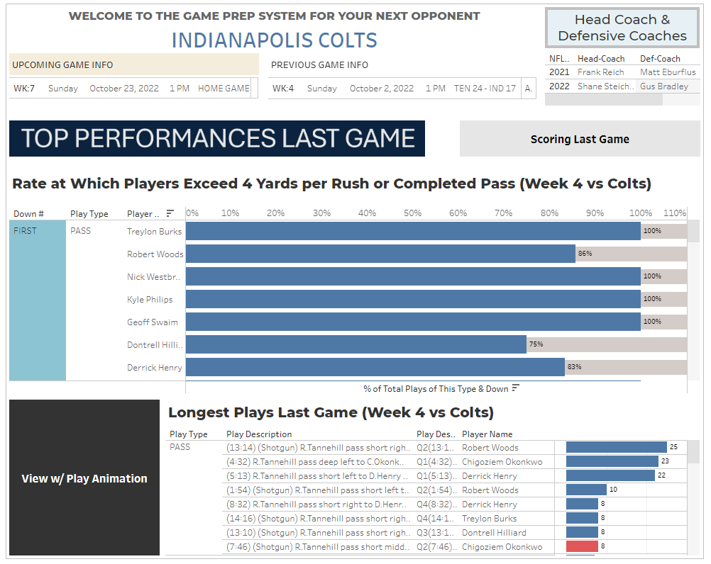

Credit to Ammar Alhaj Ali (link) for the player animation script using Plotly Express. I modified it for the look-and-feel, to add new football play meta data, and removed the SQL (but used those concepts in Tableau).

For the overall report, I am using 2022 data that was made available by the NFL for the 2024 NFL Big Data Bowl. The player tracking data for 2022, however, is focused on tackles, not the entire play. Thus, while I can generate animations for each of the plays easily, it doesn't give a complete enough view of the entire play. And I couldn't find a great source online.
Thus, I decided to use a few sample plays from the 2021 NFL Big Data content (2018 play data), because the plays are complete. And, of course, I would just analyze plays from that contest, but no, the plays included for that contest are all pass plays. Thus, it doesn't provide a great Game Prep exercise if you're just looking at one type of plays.